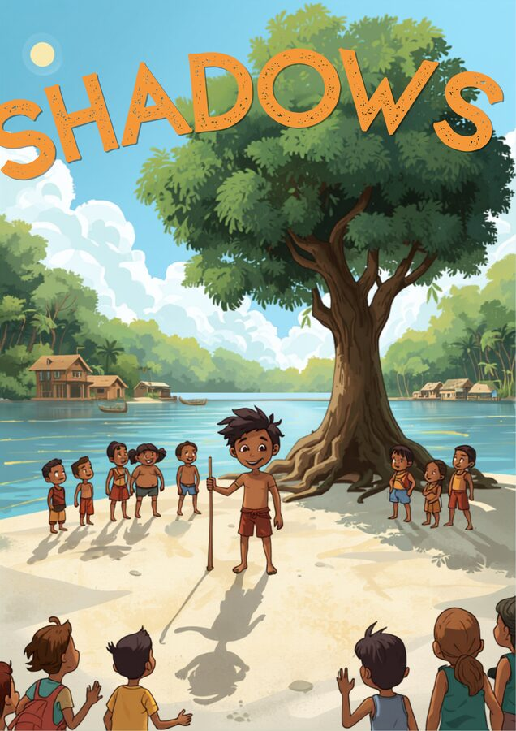

☀️ A sombra do grande açaizeiro
Na comunidade ribeirinha de Tapajós, no coração da Amazônia, o jovem Cauã adora desafiar seus amigos a adivinhar a altura das coisas. Diante de um açaizeiro gigante e imponente perto da margem do rio, Cauã pergunta: "Quem consegue descobrir o tamanho exato daquele açaizeiro sem precisar subir nele e sem usar uma régua gigante?"
Os amigos acham impossível, mas Cauã pega uma vara de madeira reta de exatamente 1 metro de comprimento e a finca no chão arenoso. Ele conta que aprendeu com seu pai uma história muito antiga sobre um sábio chamado Tales de Mileto, que usou a luz do Sol para medir grandes estruturas apenas olhando para as sombras projetadas no chão.
Cauã mostra aos amigos que, no momento em que a sombra da sua vara pequena no chão tem um tamanho proporcional, a sombra do açaizeiro gigante também segue a mesma proporção! Ao desenharem mentalmente os triângulos formados pela luz do Sol e pelas sombras, as crianças percebem que figuras parecidas — com os mesmos ângulos, mas tamanhos diferentes — guardam segredos incríveis para medir até o que parece inalcançável.

🔎 Semelhança de triângulos
Dois triângulos são semelhantes quando têm os três ângulos correspondentes congruentes e os lados correspondentes proporcionais — ou seja, o mesmo "formato", mas não necessariamente o mesmo tamanho.
Critério AA (Ângulo-Ângulo): basta que dois pares de ângulos correspondentes tenham a mesma medida para garantir que os triângulos são semelhantes — o terceiro par sai de graça, já que a soma dos ângulos internos de qualquer triângulo é sempre 180°!
Repare: 6/12 = 4/8 = 8/16 = 1/2 — todos os lados do triângulo grande valem o dobro do pequeno. Essa razão constante entre lados correspondentes se chama razão de semelhança.
✏️ Vamos treinar
🖐️ Seja o Tales de Mileto
Digite sua altura, o tamanho da sua sombra e o tamanho da sombra de um objeto gigante. Vamos calcular a altura do objeto usando semelhança de triângulos — exatamente como Tales fez com a pirâmide.
Missões
🌳 Meça o que você não alcança
A técnica de Tales é usada até hoje por comunidades tradicionais para estimar a altura de árvores, morros e construções sem precisar escalar nada.
Pense em algo grande no seu contexto que você gostaria de medir sem escalar
Descreva o objeto e explique como você usaria sombras (ou outro método baseado em triângulos semelhantes) para estimar a altura dele.
✅ Antes de seguir em frente
Marque com sinceridade. Isto não vale nota — é um mapa para você (e seu professor) saberem onde reforçar.
🎮 Complete a medida
Esses triângulos são sempre semelhantes — use a razão de semelhança para descobrir a medida que falta em cada rodada!
Qual é a medida que falta?